Hacerse socio de la SEMA es muy sencillo, y barato
La Sociedad Española de Matemática Española es una sociedad científica totalmente
consolidada en el panorama nacional e internacional. En 2016 celebró el veinticinco aniversario
de su fundación. Su historia se describe en su página web y está documentada en los
archivos que se crearon ad hoc con motivo de la conmemoración de su veinticinco
aniversario.
Ser miembro de la SEMA tiene sus ventajas. Estarás informado de las distintas actividades
de la Matemática Aplicada, en el ámbito nacional, e incluso en muchos casos, en el
internacional, a través de la edición de su Boletín electrónico, del que se publican cuatro
números al año. La SEMA organiza, con carácter bienal y en años alternos, dos eventos de
carácter internacional: el Congreso de Ecuaciones Diferenciales y Aplicaciones/Congreso de
Matemática Aplicada, CEDYA/CMA, y la Escuela Hispano-Francesa Jacques-Louis Lions de
Simulación Numérica en Física e Ingeniería, EHF; en los dos casos, sus socios disfrutan de
una cuota reducida, que sumada a la cuota de socio anual alcanzaría un valor inferior a la
cuota de inscripción de los no asociados. Además, la SEMA es la responsable de la
publicación de la revista SEMA Journal, que edita Springer, a la que los socios
tienen acceso integral a todos los números y artículos publicados hasta la fecha.
La SEMA otorga dos premios al año: el premio SEMA «Antonio Valle» al joven
investigador, y el premio SEMA al mejor artículo publicado ese año en SEMA Journal.
La SEMA celebra la asamblea anual de socios coincidiendo con la celebración del
CEDYA/CMA o de la EHF; en esta asamblea, sus socios tienen derecho a voz y voto y,
entre otras cosas, se elige al presidente de la Sociedad y a los miembros del consejo
ejecutivo.
Para hacerse socio de la SEMA basta con rellenar el formulario «hazte socio»
disponible en la página web de la Sociedad y, a continuación, enviarlo pulsando el botón
Guardar al final del formulario.
Los estudiantes tienen derecho a una cuota reducida. Además, la SEMA mantiene
acuerdos de reciprocidad con las sociedades RSME, SIAM, SMAI y SCM con cuotas reducidas
para sus socios.
Para los socios de reciprocidad es necesario adjuntar el justificante de miembro de la
sociedad que corresponda, y para los estudiantes un certificado de matrícula del
centro.

Boletín Electrónico de la Sociedad Española de Matemática Aplicada SEMA
Editores
Francisco Ortegón Gallego (Universidad de Cádiz)
JoséRafael Rodríguez Galván (Universidad de Cádiz)
Comitéeditorial
R. M. Donat Beneito, (Universidad de Valencia)
D. Gómez Pedreira, (Universidad de Santiago de Compostela)
F. de Terán Vergara, (Universidad Carlos III de Madrid)
J. L. García Guirao (Universidad Politécnica de Cartagena)